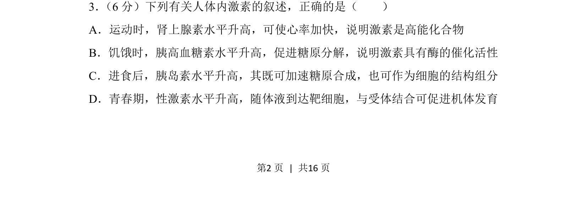
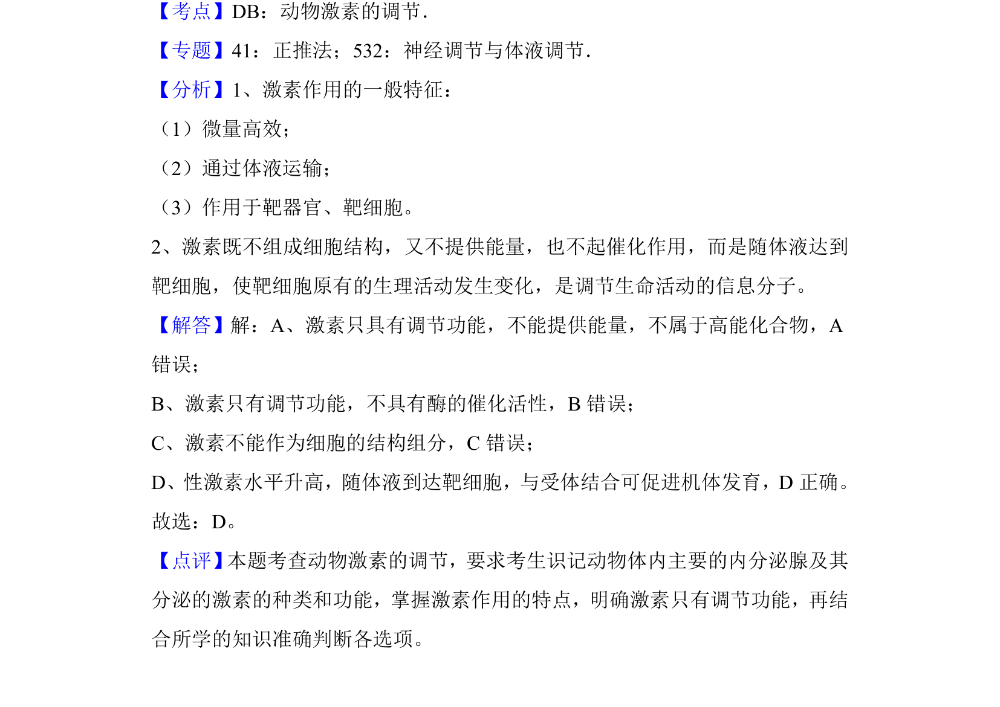

2018-新课标Ⅱ-03
考点：激素调节 物质分类 酶的特性
题面


摘要
该题考查人体内激素的作用机制，辨析激素、酶、高能化合物等概念的区别。
关联考点
答案与解析

📄 原 PDF 第 2 页：
素材/真题/吉林/2008-2024·（吉林）生物高考真题/2018年高考生物试卷（新课标Ⅱ）（解析卷）.pdf
题干文本
3． （6分）下列有关人体内激素的叙述，正确的是（ ） A．运动时，肾上腺素水平升高，可使心率加快，说明激素是高能化合物 B．饥饿时，胰高血糖素水平升高，促进糖原分解，说明激素具有酶的催化活性 C．进食后，胰岛素水平升高，其既可加速糖原合成，也可作为细胞的结构组分 D．青春期，性激素水平升高，随体液到达靶细胞，与受体结合可促进机体发育